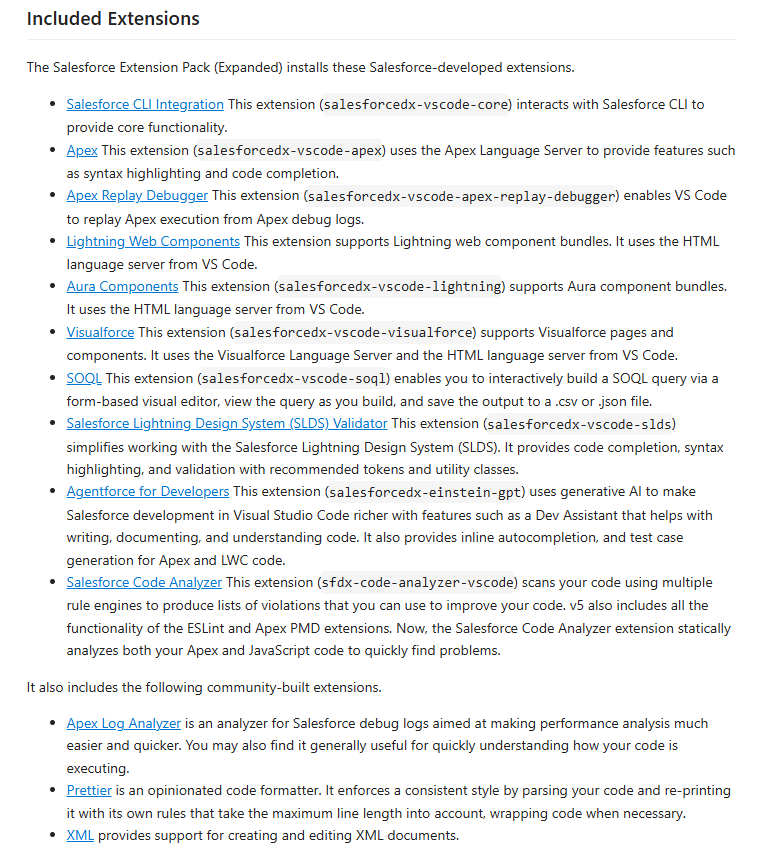

🚀 Salesforce Developer Tools Training
Modernizing Development Experience with Agentforce, Code Analyzer & AI
Modernize Salesforce development tooling within Klint to improve developer experience, quality, and security.
"Better tools enable faster, safer delivery."
| Phase | Focus | Outcome |
|---|---|---|
| 1 | Environment Setup | Ready Dev Org + VS Code stack |
| 2 | Code Analyzer Deep Dive | Understand engines & configuration |
| 3 | Agentforce for Developers | Accelerate workflows with AI |
| 4 | Exercises | Apply, automate, validate |
Install & Prepare
💡 Tip: After installing Salesforce CLI, run
sf --versionto verify.

The Salesforce CLI is a powerful command line interface that simplifies development and build automation when working with your Salesforce org.
Use it to:
Aggregate all the tools you need to develop with and perform commands against your Salesforce org
Move from sfdx (v7) to sf (v2)
If you’re currently using sfdx (v7), we highly recommend that you move to sf (v2). The move is easy: you first uninstall sfdx (v7) and then install sf (v2). After you move, the CLI commands that you’ve been running in a terminal or continuous integration (CI) scripts continue to work as before.
sf commands
Unified static + flow analysis across multiple engines:
As of August 2025, Salesforce Code Analyzer v4 is retired and no longer supported. Use Code Analyzer v5 instead.
| Engine | Purpose | Notes |
|---|---|---|
| CPD | Detects duplication | Multi-language |
| ESLint | JS/TS linting | Extensible rules |
| Flow Scanner | Flow analysis | Requires Python ≥ 3.10 |
| PMD | Structural analysis | Apex, Java, XML, etc. |
| RetireJS | Vulnerable dependencies | JS libs focus |
| Regex | Pattern scanning | Custom searches |
| Graph Engine | Data-flow/security | Apex flow tracing |
Run this command to list all rules:
sf code-analyzer rules --output-file rules.json
CPD = Copy/Paste Detector (duplication control)
Why use it?
Run this command to analyze the code of a dev org:
sf code-analyzer run --rule-selector cpd --output-file results.json
sf code-analyzer config --output-file code-analyzer.yml
sf code-analyzer run --rule-selector cpd --output-file results.json --config-file code-analyzer.yml
ESLint is a tool for identifying and reporting on patterns found in ECMAScript/JavaScript code, with the goal of making code more consistent and avoiding bugs.
no-undef
// ❌ Bad
console.log(myVar); // myVar is not defined
// ✅ Good
const myVar = "Hello";
console.log(myVar);
no-unused-vars
// ❌ Bad
function greet(name) {
const greeting = "Hello"; // never used
return `Hi ${name}`;
}
// ✅ Good
function greet(name) {
return `Hi ${name}`;
}
eqeqeq
// ❌ Bad
if (x == "5") { /* loose equality */ }
// ✅ Good
if (x === "5") { /* strict equality */ }
Create a lwc with bad js file that violates eslint rules. Execute this command to analyze the code:
sf code-analyzer run --rule-selector eslint --output-file results.json
PMD is a source code analyzer that performs static analysis of code written in a number of languages. Its bundled rules detect common flaws in code, such as empty catch blocks or unused variables.
Execute the following command to list all available PMD rules with detailed information:
sf code-analyzer rules --rule-selector pmd --view detail
Focus: Data-flow analysis for vulnerability tracing (e.g., injection paths).
| Aspect | PMD | Graph Engine |
|---|---|---|
| Perspective | Syntax structure | Data movement |
| Detects | Style & structural issues | Injection, tainted flows |
| Example Issue | Unused variable | SOQL injection risk |
Code Example (Unused Field - PMD):
public class MyClass {
private Integer count; // never used
public void doWork() {
System.debug('done');
}
}
Code Example (SOQL Injection - Graph Engine):
public with sharing class AccountSearch {
public static List<Account> unsafeSearch(String name) {
return Database.query(
'SELECT Id FROM Account WHERE Name = \'" + name + "\''
);
}
}
Entry Point: The starting code location of the path of execution from an external interaction. Source: The code location where data can originate from. When data is passed into an entry point, then the entry point is the source for that data. Data can also be produced or read other than getting passed into the entry point, making it possible for the data source to also be in the middle of a code path. Sink: The ending code location where data can be consumed or modified. Sanitizer: The check that happens between the source and sink to ensure that an appropriate action happens or an inappropriate action doesn't happen.
ApexFlsViolation
ApexFlsViolation detects Create, Read, Update, and Delete and Field-Level Security (CRUD/FLS) violations.
Entry Point
@AuraEnabled-annotated methods.
@InvocableMethod-annotated methods.
@NamespaceAccessible-annotated methods.
@RemoteAction-annotated methods.
Any method returning a PageReference object.
public-scoped methods on Visualforce Controllers.
global-scoped methods on any class.
Messaging.InboundEmailResult handleInboundEmail() methods on implementations of Messaging.InboundEmailHandler.
Any method targeted during invocation.
Sink
All DML operations and their Database.method()
counterparts: delete, insert, merge, undelete, update, and upsert.
SOQL queries and Database.query counterpart.
Sanitizer
Access check performed using Schema.DescribeSObjectResult.
Access check performed using Schema.DescribeFieldResult.
Lists filtered by Security.stripInaccessible.
SOQL queries that use WITH USER_MODE.
SOQL queries that use WITH SECURITY_ENFORCED.
public with sharing class AccountHandler {
@AuraEnabled
public static void updateAccountName(Id accountId, String newName) {
Account acc = [SELECT Id, Name FROM Account WHERE Id = :accountId];
acc.Name = newName;
update acc; // ❌ violates FLS, no check if user has edit rights on Name
}
}
public with sharing class AccountHandler {
@AuraEnabled
public static void updateAccountName(Id accountId, String newName) {
// Check FLS before performing DML
if (!Schema.sObjectType.Account.fields.Name.isUpdateable()) {
throw new AuthorizationException('Insufficient privileges to update Account Name');
}
Account acc = [SELECT Id, Name FROM Account WHERE Id = :accountId];
acc.Name = newName;
update acc; // ✅ FLS check performed
}
}
Create a bad Apex class that violates FLS using the example above. Execute this command to analyze the code:
sf code-analyzer run --rule-selector sfge --output-file results.json
File: code-analyzer.yml (root). Use --config-file to point to an alternate path.
AI-powered Salesforce development accelerator inside VS Code.
Key Features
Dev Agent's agentic capabilities are in Developer Preview, and currently behind a feature flag. To activate:
From the command palette, run Preferences: Open User Settings (JSON) to open your settings.json file.
Update your settings:
{
"salesforce.einsteinForDevelopers.enableDebugLogging": true,
"salesforce.einsteinForDevelopers.advanced": {
"enableAgenticChat": true
}
}
Save your settings.
Open the Agentforce chat panel and ask it to import sample data into the Account object.
Use Agentforce Plan Mode to create a step-by-step implementation plan
Sales representatives need a consolidated and interactive view of customer Accounts to improve productivity and decision-making. Currently, Account information is spread across multiple related lists and objects (Opportunities, Cases, Contacts), making it time-consuming to navigate and gather insights.
The system shall provide sales users with a single, unified view of each Account that:
Displays Account details along with associated Opportunities, open Cases, and key Contacts.
Allows users to quickly identify the status of current opportunities and customer service issues.
Enables filtering and prioritization of related records (e.g., Opportunities by stage, Cases by priority).
Updates automatically to reflect the most recent data without requiring additional navigation.
Reduces time spent navigating across multiple tabs and related lists.
Provides a 360° view of the customer, supporting better relationship management.
Improves sales productivity and customer satisfaction by enabling faster access to relevant information.
Users can view Account details, related Opportunities, Cases, and Contacts in one place.
Users can filter and sort related records by key criteria (e.g., stage, priority).
The data shown is always up-to-date and reflects changes as they occur.
Information displayed respects Salesforce security and visibility rules.
Create an Apex class named OpportunityController. Create a method called getNumberofOpportunities. The method takes AccountId as a parameter and returns the number of opportunities for that AccountId. I’m working on an LWC component. Make sure the SOQL uses security best practices like user-mode data operations.
Docs: https://developer.salesforce.com/docs/platform/einstein-for-devs/guide/customization-rules.html
To set up custom rules:
Select File > Preferences > Settings (Windows or Linux) or Code > Settings > Settings (macOS). Under Agentforce for Developers, select Enable Ai Custom Rules and then select the feature for which you want to enable or disable rules.
Description: Enforce some best practices and naming and formatting standards for Apex code
Applies to: **/*.cls and **/*.trigger.
Guidelines:
AccountService)@isTest and seeAllData=false for all test classesaccountList or isClosed)isActive or hasAccess )contacts or accountsMap )account, not acc)insert as user or update as user.WITH USER_MODE explicitly for SOQL queriesAccountServiceTest)testCalculateTax_WithValidInput)System.Assert class instead of System assertGenerate Apex Class with suffix "Klint_"
Klint Salesforce Best Practices:
https://efrontech365.sharepoint.com/sites/eFrontech-Salesforce/SitePages/Bonnes-Pratique.aspx